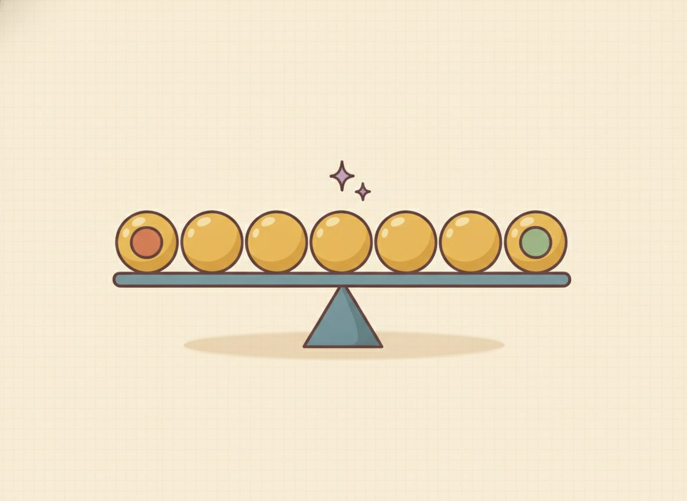

One-variable statistics — center & spread
Picture five friends comparing quiz scores. Two questions come up almost on their own: what's a typical score, and were they all close together or all over the place? Those are the two questions you ask of any pile of numbers, and statistics has a small toolkit for each. The first question is about the center of the data; the second is about its spread. This lesson builds four numbers that answer them, and shows you when one of them tells the truer story than the others.
Here's a way to see all of it at once. Imagine dropping the scores onto a number line, one dot per score. The whole picture of "typical versus spread out" is right there: where the dots pile up is the center, and how far they reach is the spread.
The mean is the balance point of that line. It's the spot where the dots would balance if the line were a seesaw. The median is the dot with equal counts of dots on either side of it. And whether the dots sit in a tight clump or stretch far apart is the spread.

Now the symbols, which are just shorthand for those pictures. The mean is the "fair share": add every value and divide by how many there are, the way you'd split a bill evenly. The median is the middle value once you put the list in order. The range is the biggest value minus the smallest. It's a first, quick measure of how far the data reaches.
That ordering step in the median is small and easy to skip, so make it a habit from the start: line the numbers up smallest to largest first, then point to the middle. It matters because the middle of the unordered list is usually the wrong number. In {4, 8, 6, 5, 2} the middle as written is 6, but ordered it's 2, 4, 5, 6, 8 and the real middle is 5. If there's an even count, there's no single middle dot, so you average the two middle ones.
New words
- A.1.d1 Mean (average): add all the values, divide by how many there are. The "fair share" if everyone got the same.
- A.1.d2 Median: the middle value once the data is put in order. With an even count, average the two middle ones.
- A.1.d3 Mode: the value that appears most often. A set can have one mode, two or more, or, when nothing repeats, none. (That "nothing repeats → no mode" is a labeling convention; some books instead say every value is a mode. We'll use "no mode" here.)
- A.1.d4 Range: max − min. How far the biggest is from the smallest. A first measure of spread.
- A.1.d5 Outlier: a value sitting far above or below where the rest of the numbers cluster. An unusually huge or tiny entry compared with its neighbors. Outliers are the reason the mean and median can disagree (see below).
- A.1.d6 Spread (intuition): are the numbers clustered tightly together or scattered widely apart? Range is the quick version; standard deviation is just a single number summarizing the typical distance of values from the mean (a special kind of averaged distance). Bigger means more spread out. (We name it for vocabulary only; no need to compute it here.)
Read each worked example slowly, one line at a time, and ask why each line follows before you go on. The first one finds all four numbers for a small list.
Worked example
- A.1.w1 Data set {4, 8, 6, 5, 2} (5 values). For the mean, add and divide by the count: (4+8+6+5+2)/5 = 25/5 = 5. For the median, order it first, 2, 4, 5, 6, 8, and the middle value is 5. For the range, take max − min: 8 − 2 = 6. No value repeats, so there's no mode.
- A.1.w2 Data set {2, 2, 3, 9}, which has an even count of 4 values. The mean is (2+2+3+9)/4 = 16/4 = 4. For the median, order it (2, 2, 3, 9) and, because the count is even, average the two middle values: (2+3)/2 = 2.5. The mode is 2, the only value that appears twice, and the range is 9 − 2 = 7. Look at the gap the 9 opens up: it's an outlier, and it pulls the mean (4) up above the median (2.5). The median describes "typical" better here.
- A.1.w3 Data set {3, 4, 5, 6, 30}. Spotting an outlier and watching what it does. Ordered, it's already 3, 4, 5, 6, 30: four values clustered near 3 to 6, then one sitting far above the rest, so 30 is the outlier. The mean is (3+4+5+6+30)/5 = 48/5 = 9.6, and the median is the middle of the ordered list, 5. Already the mean (9.6) sits well above the median and above every clustered value, which is the outlier's effect. Now drop the 30 and recompute on 3, 4, 5, 6: the mean falls all the way to (3+4+5+6)/4 = 18/4 = 4.5, while the median only shifts from 5 to (4+5)/2 = 4.5. So removing the outlier moved the mean by 5.1 but the median by only 0.5. The outlier dragged the mean; the median barely budged. That's exactly why the median is the fairer "typical" when an outlier is in the data.
So the mean and the median can tell different stories, and the reason is always an outlier, a value sitting far from where the rest cluster. One ordinary salary list with a single CEO's pay tacked on is the classic case: the mean salary looks high, but the median reports the truer "typical" pay. Use the median when the data is skewed or has outliers.
This doesn't make the mean wrong. If those extreme values genuinely count, a total bill, say, the mean is the right summary. It's "typical" specifically that the median reports better.
Two small habits keep the mode from tripping you. First, "most often" can come up empty: if nothing repeats, there's no mode, and that's a normal answer, not a missed step. Second, a set can have more than one mode if two values tie for most frequent.
Here's a clean case to get the method moving before the practice mixes things up. Find all four for {5, 5, 8}. Mean: (5+5+8)/3 = 18/3 = 6. Median: it's already ordered, and the middle value is 5. Mode: 5, which appears twice. Range: 8 − 5 = 3. Nothing tricky, just the four moves, once each.
Check yourself
- A.1.c1 A house on your street sells for $50,000, $60,000, and $55,000, and one mansion sells for $2,000,000. Would you describe the "typical" price with the mean or the median, and why? (The median, about $57,500, because the $2,000,000 sale is an outlier that drags the mean far above what's typical for the street.)
- A.1.c2 You have five numbers with a mean of 10. If you add a sixth number equal to 10, does the mean change? What if you add a 40 instead? (Adding another 10 keeps the mean at 10. It's already the fair share. Adding a 40 pulls the mean up, to (50+40)/6 = 15, because 40 sits well above the others.)
- A.1.c3 Two classes both averaged 80 on a test, but one class's scores sat near 80 while the other's ranged from 50 to 100. Which fact is about center, and which is about spread? (The matching average of 80 is the center; the range from 50 to 100 versus "all near 80" is the spread.)
- A.1.c4 In the set {3, 4, 5, 6, 30}, which value is the outlier, and what does it do to the mean compared with the median? If you removed it, which of the two would change a lot and which would barely move? (30 is the outlier; it pulls the mean up to 9.6 while the median stays at 5. Remove it and the mean drops to 4.5, a big move, while the median barely shifts, also to 4.5.)
You can now find the mean, median, mode, and range of a small list, and say which measure of center to trust when an outlier shows up.
Mixed practice feels harder than repeating one kind of problem, and that's the point. It's what makes the skill stick to next week. Every problem below has its answer at the end of the lesson, and if one stalls you, flip back to the worked example it's based on. That's what it's there for.
Practice problems (for each set, find the mean, median, mode, and range):
- A.1.1 {3, 7, 7, 9, 4}
- A.1.2 {10, 12, 14, 12}
- A.1.3 {1, 2, 2, 2, 8}
- A.1.4 {5, 5, 6, 8}
- A.1.5 {15, 25, 25, 35}
- A.1.6 {6, 6, 6, 6}
- A.1.7 {2, 4, 4, 6, 9}
- A.1.8 {2, 5, 5, 8, 10}
- A.1.9 {1, 1, 2, 4}
- A.1.10 {3, 3, 7, 8, 9}
- A.1.11 {2, 4, 5, 6, 8} (which mode case is this?)
- A.1.12 {3, 3, 7, 7, 30} (spot the outlier. What does it do to the mean vs. the median?)
Answer key (mean · median · mode · range):
- 6 · 7 · 7 · 6
- 12 · 12 · 12 · 4
- 3 · 2 · 2 · 7
- 6 · 5.5 · 5 · 3
- 25 · 25 · 25 · 20
- 6 · 6 · 6 · 0
- 5 · 4 · 4 · 7
- 6 · 5 · 5 · 8
- 2 · 1.5 · 1 · 3
- 6 · 7 · 3 · 6
- 5 · 5 · no mode · 6 — nothing repeats, so there's no mode.
- 10 · 7 · 3 and 7 (bimodal) · 27 — 30 is the outlier: it drags the mean up to 10 while the median stays at 7.